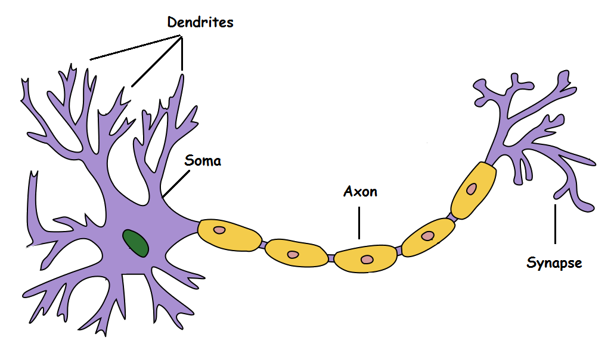
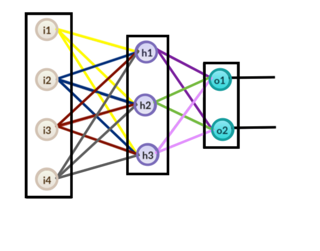

What is a Perceptron?
To understand an Artificial Neural Network, we must first generally understand how a neuron works:
Figure 1.
A biological neuron, as shown above in Figure 1, are incredibly complex cells responsible for
receiving sensory information from the world around us and distributing commands to our muscles
throughout the rest of our body. However all we need to help understand the general concept of
a Neuron are the Dendrites, Soma, Axon and Synapse.
The Dendrites serve as the entry point for the inputs of any given neuron.
The Synapse serves as the exit point where the neurons will output the new information.
How does this compare to an Artificial Neural Network?
Figure 2.
Pratik Shukla and Roberto Iriondo from TowardsAI defined an artificial neural network (ANN) as
"interconnected input and output units in which each connection has an associated weight."
But what does that mean? To help understand how these processes are conducted, we can look at a
common real world example:
Lets say you are in your house and the fire alarm goes off. You only have a limited amount of time
to evacuate, so what will you grab on your way out?
Family, Pets, Jewelry and Money are a few of the possible options here. Most people would immediately
go after their family and pets. In the context of an ANN, Family and Pets would have a larger weight
value and Jewelry and Money would have a lower weight value.